Periodismo de datos electorales
Atlas de las anomalías electorales
Los resultados generales esconden lugares que votan distinto de lo que cabría esperar por sus vecinos, por los municipios que más se les parecen o por su propia historia. Cada pieza parte de una de esas comparaciones, enseña los datos y separa lo que se sabe de lo que todavía es hipótesis.
Los resultados de todos los municipios se consultan en el mapa de resultados de España. El Atlas no tiene fichas municipales: solo piezas con una pregunta y una respuesta.
Las piezas
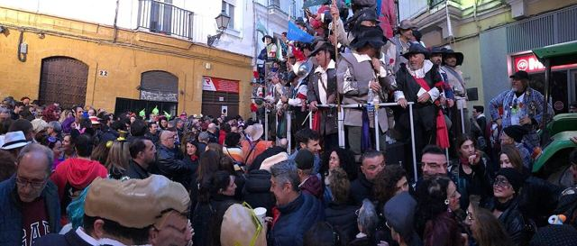
BisagrasSi el 29N se votara como en 2023, el escaño que pierde Cádiz sería del PP y el que gana Madrid, del PSOEPara las generales del 29 de noviembre de 2026, Madrid elige 38 diputados (uno más) y Cádiz 8 (uno menos).Leer la pieza →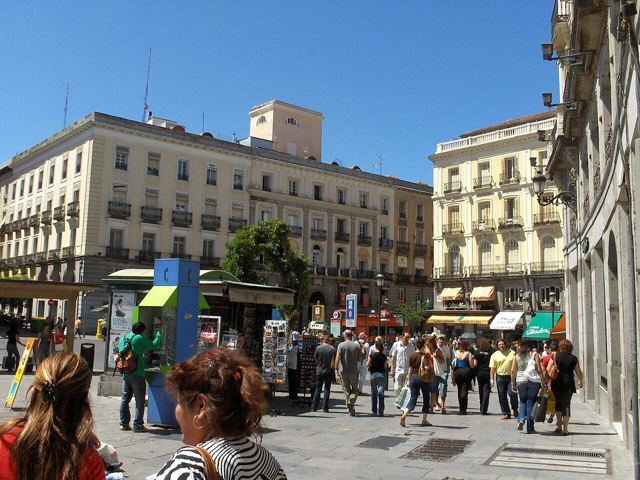
BisagrasEl último escaño de Madrid en 2023 lo decidió el voto desde el extranjeroCon los votos emitidos en España, el último escaño de Madrid era del PSOE: al PP le faltaban 1.915 votos.Leer la pieza →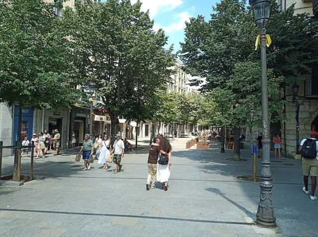
Bisagras6 escaños del 23J se decidieron por menos de 1.500 votos; en Girona bastaban 285En 6 de las 52 circunscripciones, a la lista que se quedó sin el último escaño le faltaron menos de 1.500 votos para lograrlo.Leer la pieza →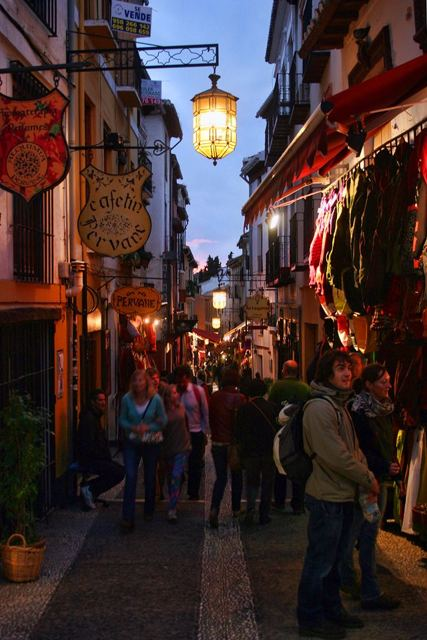
Ciudad, corona e interiorLa capital no es la isla progresista de su provincia: en 33 de 50 vota más al PP que el restoNo en la mayoría de España. El 23J, la capital dio al PP un porcentaje mayor que el resto de su provincia en 33 de 50 casos, con Granada (+9,4 puntos), Donostia y Vitoria a la cabeza.Leer la pieza →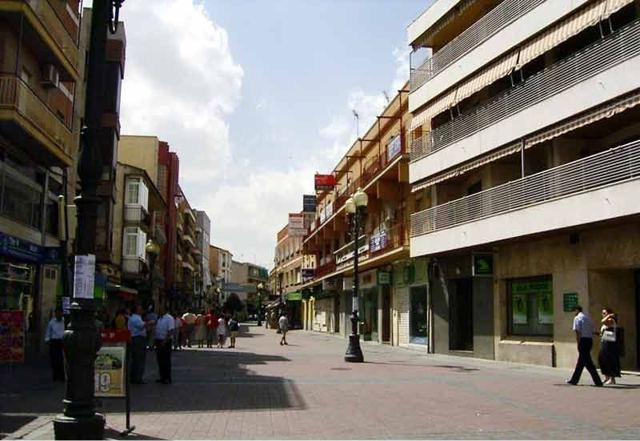
Contra su provinciaEl PSOE ganó en cuatro grandes ciudades del sur de Madrid mientras el PP ganaba la provincia por 13 puntosEl PP ganó la provincia de Madrid el 23J con el 40,5 % frente al 27,9 % del PSOE.Leer la pieza →- Fronteras que votan distintoFronteras que votan distintoA Illa de Arousa vota 23 puntos menos al PP que Vilanova, al otro lado del puente, y así desde hace veinte añosEl 23J de 2023, el PP sacó el 33,1 % en A Illa de Arousa y el 55,9 % en Vilanova de Arousa, el municipio vecino al otro lado del puente.Leer la pieza →
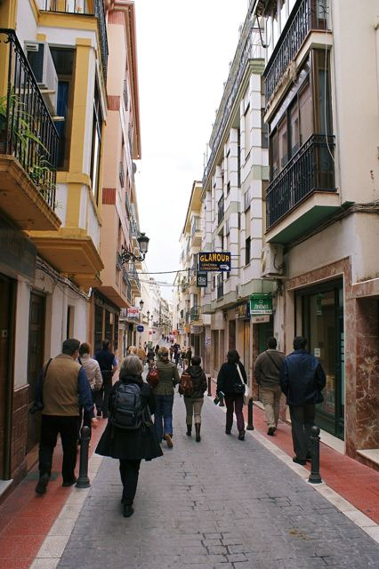
Gemelos electoralesEn 2004 Cabra y Montilla votaban igual; en 2023 las separaban 12 puntos de voto a la derechaCabra y Montilla, en el sur de Córdoba, tienen casi la misma renta (17.575 y 17.813 euros), la misma edad media y el mismo paro.Leer la pieza → Las excepcionesPuerto Real vota 23 puntos menos a la derecha de lo que predicen sus datos: la mayor excepción de EspañaPor su renta, edad, paro, estudios, extranjeros y tamaño, a Puerto Real (Cádiz) le correspondería dar a PP, Vox y Cs alrededor del 50,1 % del voto.Leer la pieza →
Las excepcionesPuerto Real vota 23 puntos menos a la derecha de lo que predicen sus datos: la mayor excepción de EspañaPor su renta, edad, paro, estudios, extranjeros y tamaño, a Puerto Real (Cádiz) le correspondería dar a PP, Vox y Cs alrededor del 50,1 % del voto.Leer la pieza →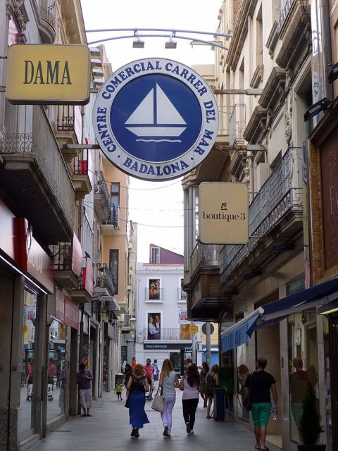
Voto dobleBadalona dio al PP el 56 % en mayo y el 17 % en julio: la mayor distancia de España entre voto local y estatalEn las municipales del 28 de mayo de 2023, el PP sacó en Badalona el 55,7 % del voto válido.Leer la pieza →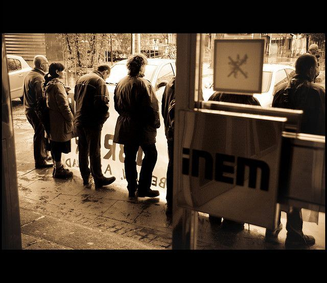
Quién no votaA igual renta, los barrios con más paro votan menos: el desempleo pesa más que el dinero en la abstenciónEn las 34.590 secciones censales de España, la participación del 23J sube con la renta: del 62,1 % en el 10 % de secciones más pobres al 77,4 % en el 10 % más rico.Leer la pieza → Las excepcionesLas cuencas mineras de Asturias votan a la derecha hasta 16 puntos menos de lo que predice su perfil, y a la izquierda como hace veinte añosEn San Martín del Rey Aurelio, Mieres, Langreo y Laviana, PP, Vox y Cs sacaron el 23J entre el 31,7 % y el 36,8 %, entre 11,2 y 16,2 puntos menos de lo que predicen su renta, su edad, su paro y su tamaño.Leer la pieza →
Las excepcionesLas cuencas mineras de Asturias votan a la derecha hasta 16 puntos menos de lo que predice su perfil, y a la izquierda como hace veinte añosEn San Martín del Rey Aurelio, Mieres, Langreo y Laviana, PP, Vox y Cs sacaron el 23J entre el 31,7 % y el 36,8 %, entre 11,2 y 16,2 puntos menos de lo que predicen su renta, su edad, su paro y su tamaño.Leer la pieza → Las excepcionesLalín y Vilanova de Arousa, los dos municipios donde el PP saca más voto por encima de lo que predicen sus datosPor su renta, su edad, su paro y su tamaño, a Lalín le correspondería dar a PP, Vox y Cs el 43,8 % del voto.Leer la pieza →
Las excepcionesLalín y Vilanova de Arousa, los dos municipios donde el PP saca más voto por encima de lo que predicen sus datosPor su renta, su edad, su paro y su tamaño, a Lalín le correspondería dar a PP, Vox y Cs el 43,8 % del voto.Leer la pieza →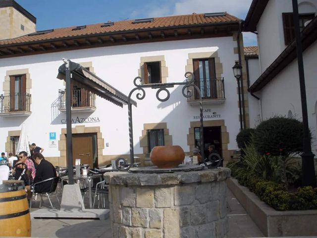
Fronteras que votan distintoCizur y Zizur Mayor, a 1,4 kilómetros: 31 puntos de diferencia en el voto a la derechaEn Cizur, PP (con UPN), Vox y Cs sacaron el 23J el 66,3 % del voto.Leer la pieza →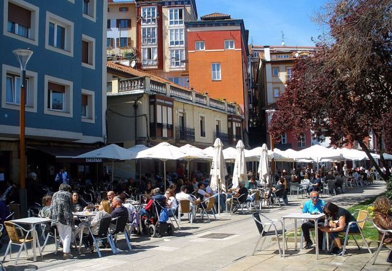
Fronteras que votan distintoGetxo y Portugalete, a los dos lados de la ría: el PSOE saca 21 puntos más en una orilla que en la otraEl 23J, el PSOE sacó el 39,1 % en Portugalete y el 17,7 % en Getxo, al otro lado de la ría.Leer la pieza →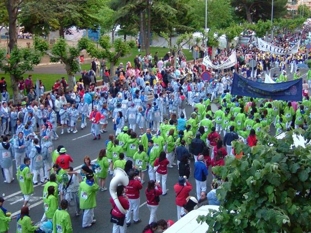
Gemelos electoralesAranda y Miranda, las dos Burgos: misma renta y mismo paro, y 11 puntos de distancia en el voto a la derechaAranda de Duero y Miranda de Ebro tienen casi la misma población (33.360 y 35.745 habitantes), la misma renta (21.275 y 21.874 euros) y el mismo paro (14,8 % y 14,9 %).Leer la pieza →- El municipio que cambióEl municipio que cambióLos Palacios y Villafranca: el PSOE pasó del 66 % al 26 % en veinte años, y en mayo ganó una lista de IUEn las generales de 2004, el PSOE sacó en Los Palacios y Villafranca (Sevilla) el 65,5 % del voto.Leer la pieza →
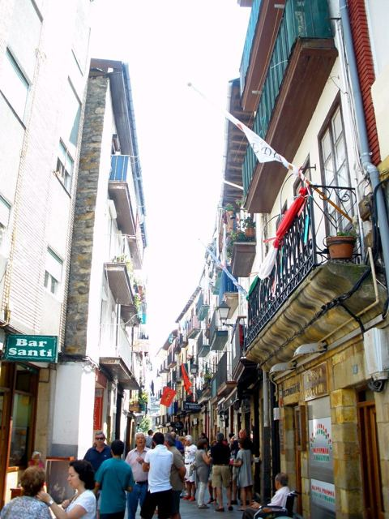
Contra su provinciaCastro-Urdiales, el municipio cántabro donde el PSOE ganó por 19 puntos mientras el PP ganaba CantabriaEl 23J, el PP ganó en Cantabria con el 42,1 %, frente al 33,3 % del PSOE.Leer la pieza →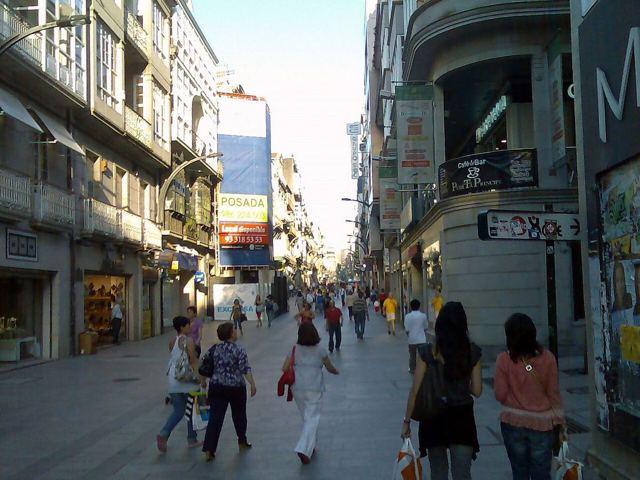
Contra su provinciaVigo, la única gran ciudad gallega donde ganó el PSOE el 23J, y donde en mayo le dio el 61 %El 23J el PP ganó en Galicia con el 43,6 %, frente al 29,9 % del PSOE.Leer la pieza → Quién no votaLos pueblos pequeños son los únicos que votan más para elegir alcalde que para elegir al GobiernoEn las ciudades se vota mucho menos en las municipales que en las generales: en las de más de 100.000 habitantes, un 61,6 % en mayo de 2023 frente a un 70,3 % en julio.Leer la pieza →
Quién no votaLos pueblos pequeños son los únicos que votan más para elegir alcalde que para elegir al GobiernoEn las ciudades se vota mucho menos en las municipales que en las generales: en las de más de 100.000 habitantes, un 61,6 % en mayo de 2023 frente a un 70,3 % en julio.Leer la pieza →
Las series
- Las excepciones: Lugares que votan muy distinto de lo que predicen su renta, su edad, su paro y su tamaño.
- Fronteras que votan distinto: Municipios vecinos, separados por pocos kilómetros y muchos puntos de voto.
- Gemelos electorales: Municipios casi idénticos en sus datos que votan de forma opuesta.
- Contra su provincia: Lugares donde gana quien pierde en su provincia, y al revés.
- Ciudad, corona e interior: La distancia entre la ciudad y el territorio que la rodea.
- Voto doble: El mismo electorado vota distinto según qué se elige.
- Bisagras: Votos y lugares que deciden algo mucho mayor que su peso.
- El municipio que cambió: Lugares que han dado la vuelta a su voto en veinte años.
- Quién no vota: Quién se queda fuera de las urnas, y por qué grupos de razones.
Cómo trabajamos
Cada afirmación se marca como dato (verificable y reproducible), patrón (relación descriptiva, sin causa) o hipótesis (explicación posible que aún no tiene dos fuentes independientes). Ninguna pieza se publica sin revisión humana. Metodología · Correcciones